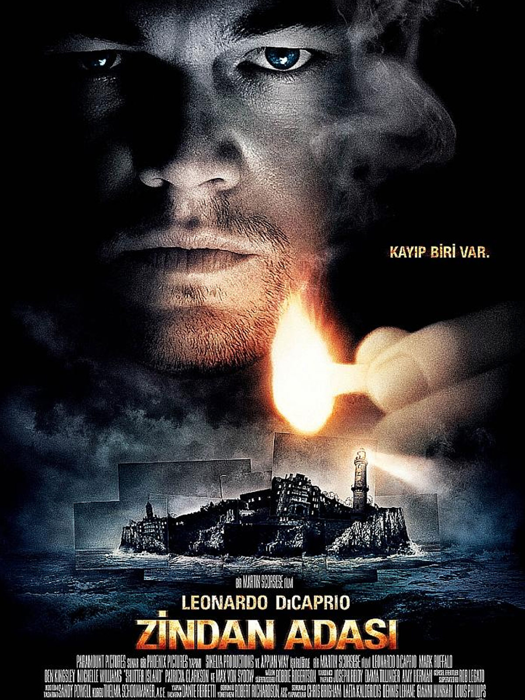
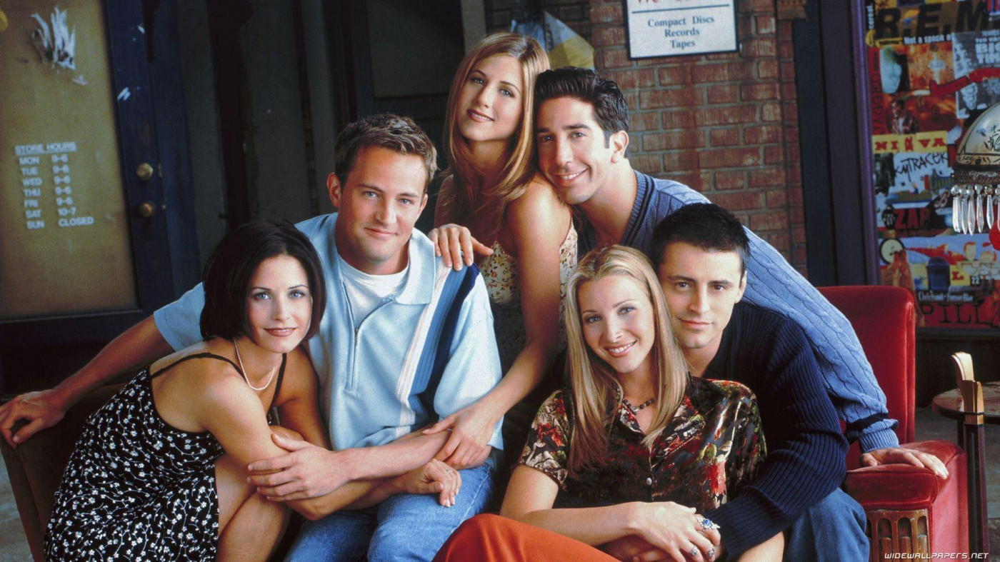
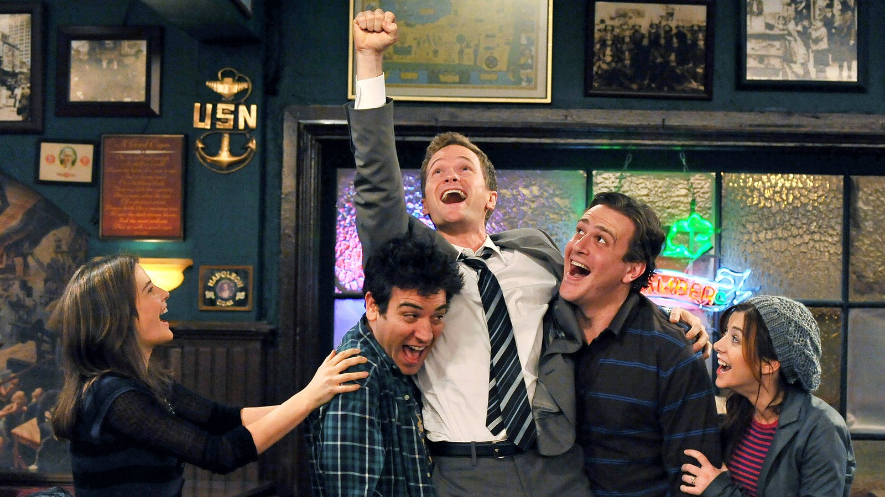

HOBİLERİM
Kitap okumayı, film ve dizi izlemeyi çok severim. Bu sayfada en sevdiğim film, dizi ve kitapları sizlerle paylaşacağım.
filmler
THE IMITATION GAME: ENİGMA
II. Dünya Savaşı Nazi Almanyası'nın hâkimiyetinde birden çok
cephede çok çetin biçimde devam etmektedir. İngiliz İstihbaratı
tüm yoğun çabalarına ve yüzlerce kişiyi çalıştırmasına rağmen
Almanların kullandığı Enigma şifreleme sistemini çözmeyi
başaramamıştır. Almanların çok gizli bir biçimde şifrelediği bu
yazışmalar, İngilizlere ve müttefiklerine çok ağır kayıplara mal
olmuştur. Çözüm olarak İngiliz hükümeti Deniz Kuvvetleri
Komutanlığı çatısı altında ülkenin en iyi şifre çözen beyinlerini
ve kriptoloji uzmanlarını toplar. Bu isimlerden biri de farklı
çalışmalarıyla tanınan ve kendi yöntemlerinden ödün vermeyen genç
profesör Alan Turing'dir. Turing'in ekibe katılması dengeleri alt
üst edecek ama o güne kadar hiç denememiş büyük çaplı bir
girişimin de kapısını aralayacaktır. Ünlü İngiliz matematikçi Alan
Turing'i filmde Benedict Cumberbatch canlandırırken kendisine
Keira Knightley, Matthew Goode, Rory Kinnear ve Allen Leech eşlik
ediyor.

SHUTTER ISLAND
Zindan Adası, Martin Scorsese'nin bir çok filmi gibi yine bir
başyapıt statüsünde. Filmde, Teddy Daniels ve Chuck Aule isimli
iki polis memurunun, Rachel Solando adlı bir akıl hastasının
ortadan kaybolması üzerine tehlikeli akıl hastalarının tedavi
gördüğü Shutter Adası isimli bölgede konuşlanan Ashecliffe
Hastanesi'ne soruşturma yapmak için gitmesi ve sonradan gelişen
esrarengiz olaylar aktarılıyor. Burada karşılaştıkları isyan
tablosu ve çığrından çıkan işler bu davayı gittikçe zora sokacak,
zamanla rüya ve gerçek arasındaki sınırlar zorlanacaktır. Usta
yönetmen Martin Scorsese tarafından Dennis Lehane'nin ünlü
romanından sinemaya uyarlanan filmin başrolünde yönetmenin gözde
oyuncularından Leonardo Di Caprio bulunuyor.
diziler

FRIENDS
Rachel Green düğününden kaçıp New York'ta bir restoranda aşçı
olduğunu bildiği çocukluk arkadaşı Monica Geller'ı bulmaya gider.
Rachel, Monica'nın evine yerleşir ve onun arkadaş grubuna katılır.
Bu gruptakiler: ünlü olmaya çalışan aktör Joey Tribbiani, iş adamı
Chandler Bing, masöz ve müzisyen Phoebe Buffay ve Monica'nın
abisi, yeni boşanmış paleontolog Ross Geller'dır. Rachel ailesinin
yardımı olmadan hayata yeniden başlamaya karar verir ve grubun sık
sık gittiği, Manhattan'daki Central Perk adlı cafede garson olarak
işe girer. Grup burası dışında en çok Monica ve Rachel'ın New
York, West Village'teki apartman dairesinde ve karşı dairede
yaşayan Chandler ve Joey'nin evinde vakit geçirir. Bölümlerde
genel olarak gruptakilerin eğlenceli, romantik maceraları ve başta
Joey'nin rol seçmeleri ve Rachel'ın moda sektöründe iş araması
olmak üzere, kariyerleri konu edilir. Altı karakterin de dizi
boyunca pek çok romantik ilişkisi olur, bunlardan bazıları
Monica'yla Richard Burke ve Ross'la Emily Waltham gibi ciddiyken
çoğu kısa sürelidir. Dizide en sık tekrar eden hikâye Ross ve
Rachel'ın ilişkisidir. İkili sürekli ayrılıp barışır; Ross Emily
ile evlendiğinde dahi Rachel'la arasındaki bağ kaybolmaz. İkilinin
bir çocuğu da vardır. Chandler ve Monica ilerleyen zamanda
evlenirler, Phoebe de Mike Hannigan'la evlenir. Dizide sık görünen
diğer karakterler: Long Island'da yaşayan Ross ve Monica'nın
ebeveynleri, Ross'un eski karısı ve oğlu, Central Perk'teki
barista Gunther, Chandler'ın eski sevgilisi Janice ve Phoebe'nin
ikiz kardeşi Ursula'dır.

HOW I MET YOUR MOTHER
Dizi, 2030 yılında, Ted Mosby'nin çocuklarına anneleri (kendi eşi)
ile nasıl tanıştığını anlatmasıyla başlar. Bob Saget'in
seslendirmesiyle asıl karakteri Ted "Size annenizle nasıl
tanıştığımı anlatacağım." der ve dizi 2005 yılına döner. Bays ve
Thomas dizideki arkadaşlığı kendi arkadaşlıklarından yola çıkarak
yazmışlardır. Buna göre Ted karakterinde daha çok Bays öne
çıkarken Marshall ve Lily karakterleri ise Thomas ve eşinden
esinlenilmiştir.
kitaplar

1984(George Orwell)
2.dünya savaşından sonra dünya yeniden kurulmuş gibidir. 1984
yılını anlatan ve bu dönemde hangi olayların yaşandığı ve bu
dönemde yaşanan ayaklanmaları anlatan bir konusu bulunmaktadır.
Kitap Okyanusya adlı toplumun yaşadıkları olayları anlatmaktadır.
1984 kitabının ana fikri ise durum ve şartlar ne olursa olsun
insanlar hangi rejimler ile yönetiliyor olursa olsun düşünceler
baskılanamaz ve herkes istediği şeyi sorgular ve düşünür.

CESUR YENİ DÜNYA(Aldous Huxley)
Bu romanda üreme teknolojisi, öjenik ve de uykuda öğretim
sistemleri sayesinde toplum değiştirilmiştir. Bu tanımlanan dünya
aslında bir ütopya olarak gözükebilir, fakat çok ironik bir
ütopyadır. Çünkü insanlık sağlıklı olmakta, teknolojik açıdan
gelişmiş olmakta, savaşlar ve yoksulluk yok edilmiş olmaktadır.
Irkların tam olarak eşit olduğu ve de herkesin mutlu olduğu bir
dünya mevcuttur. Ancak, ironik biçimde bütün gelişmeler bireyler
için önemli olan değerlerin yok edilmesi ve kaldırılmasıyla
başarılmıştır. Bu değerler; aile, sanat, kültürel çeşitlilik,
edebiyat ve felsefe olmaktadır. Yeni Dünya'da tanrı da Ford'dur.
Ayrıca salt bir şekilde zevki önüne gelen ile seks yapmada ve de
vücutta yan etkileri aza indirilmiş uyuşturucu kullanmada
hedonistik bir topluma dönüşmüştür.